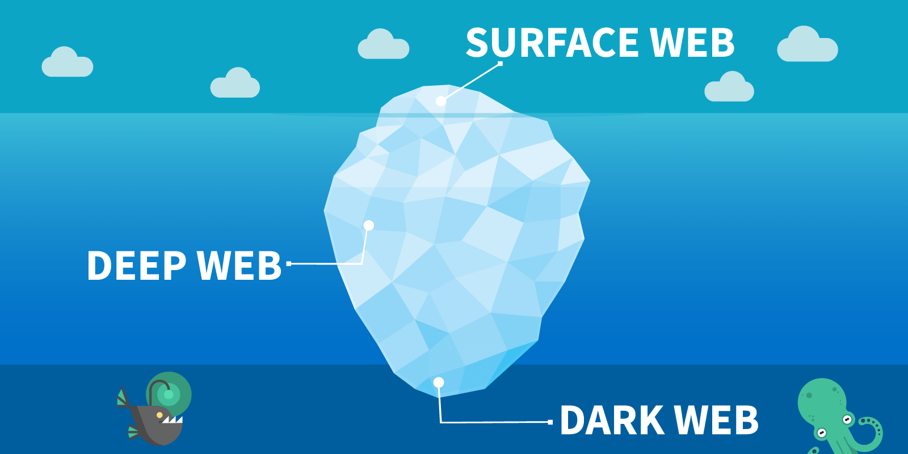

Hur stort är Dark web?

Dark web är en del av internet som inte indexerats av traditionella sökmotorer och som
endast kan nås med speciell programvara vilket ger anonymitet till sina användare och
gör detta till en plats för suspekta aktivitet.
Deep web är hela den delen av Internet som inte indexerats av traditionella sökmotorer
vilket låter väldigt likt Dark web. Det beror på att de är lika i den meningen att Dark
web är en del av Deep web, men att Deep web är inte nödvändigtvis är Dark web.
Den del av internet som du dagligen använder dig av via sökmotorer är den ytliga delen av
webben. Dessa webbplatser har indexerats av sökmotorer. Även om den ytliga delen av
webben står för majoriteten av internettrafiken dagligen så är denna del av internet liten
jämfört med storleken på Deep web. Uppskattningsvis utgör Deep web 99% av internet
och Dark web utgör enbart ca 0,01% av Deep web.